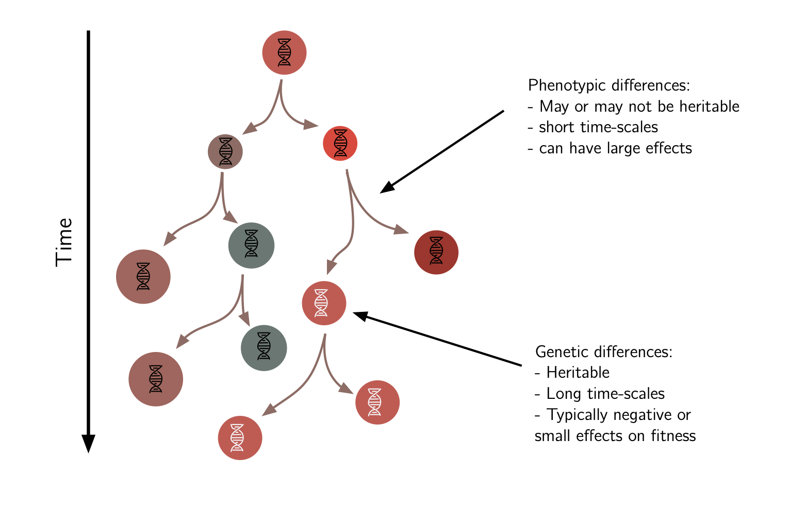
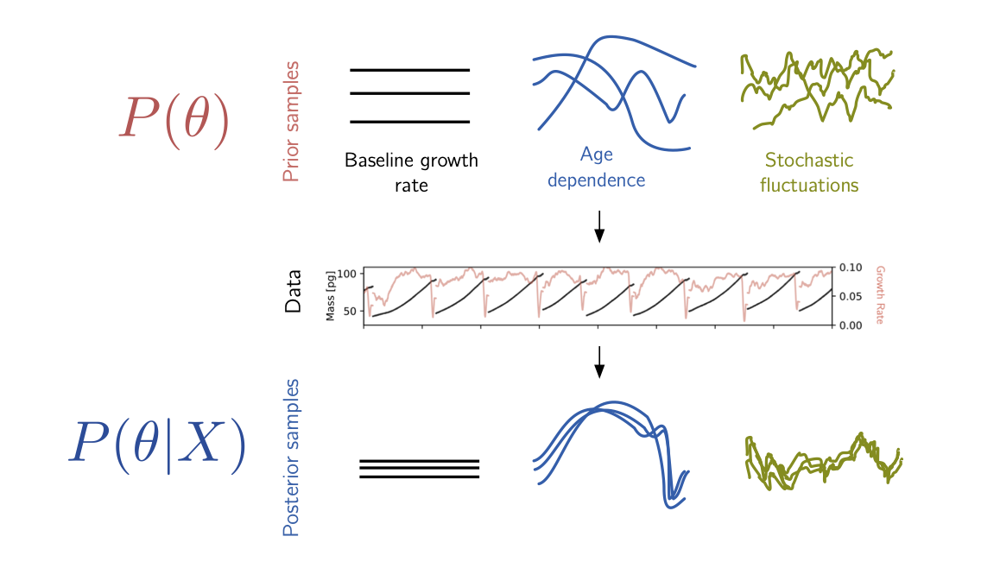
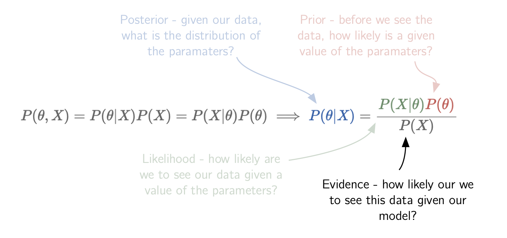

Making sense of non-genetic variability
Ethan Levien
Cell-to-cell variability
Cell-to-cell variability
Eldar and Elowitz, Nature (2010)
Cell-to-cell variability
Balaban et al. Science (2004)
A closer look at variability in bacteria
Wang et al. Current Biology (2010)
Some numbers
| Phenotype | CV ($\sigma/\mu$) |
|---|---|
| growth rates | $.06-.18$ |
| generation times | $.18-.25$ |
| size | $.19-.27$ |
Two questions
- How does cell-to-cell variation influence growth at the population level?
- What are the biological mechanisms which lead to variation in these traits?
Part 1: Linking single-cell and population dynamics

“Knowing the number of births and burials which happen during the course of one year, to find the number of all the living and their annual increase, for a given hypothesis of mortality.” – Leonhard Euler.
Branching process model
Alfred Lotka (1934), Bellman and Harris (1948) and Powell (1956): Each cell's generation time is drawn independently from a distribution $f(\tau)$.
In the long-term, $N(t) \sim e^{\Lambda t}$ for some $\Lambda$.
How does the rate at which the population grows depend on the distribution of generation times?
Branching process model
The root cell has two daughters with progenies that grow exponentially at the same rate $\Lambda$.
Let $\tau$ be the first cell's generation time:
Writing the population size at time $t$ in terms of the size of both daughter progenies gives the so-called Euler-Lotka Formula
The Euler-Lotka equation
We have derived the the Euler-Lotka equation.
If all cells live for exactly a time $\tau$, then $N(t) = 2^{t/\tau}$, so the rate of exponential growth is
Jensen's inequality tells us
If we fix the average generation time then variability will increase the rate of growth.
But in real microbial populations there are always correlations!
Uncorrelated generation times are incompatible with cell-size control
In reality, the division time is determined by complex regulatory mechnanisms which ensure cells mantian homeostasis of their sizes
A better model of cell division involves (Lin and Amir 2017 and Levien et al. 2019) $ f(\tau|\text{growth rate, initial size, mother cells sizes...})$
Generalized Euler-Lotka Formula
The Euler-Lotka formula has an elagent generalization to the case where cell's generation times are correlated with their ancestors (Lebowitz et al., 1974): where $\color{rgb(20, 116, 111)}{f_{\rm tree}(\tau)}$ is the distribution of generation times taken over all cells throughout the history of an exponentially growing population.
In general $\color{rgb(20, 116, 111)}{f_{\rm tree}(\tau)} \ne \color{rgb(205, 88, 73)}{f(\tau)}$
$\implies$ does not connect growth rate to lineage dynamics!
From single-cell data to population growth

Can we predict the population dynamics from observations of single-cells?
Joint work with Trevor GrandPre and Ariel Amir.
Lineage representation of growth exponent
Lineage representation of growth exponent
Levien et al. PRL (2020)
Lineage representation of growth exponent
With $N(n,T) = P(n,T)\times 2^n$ and summing over $n$ gives the total number of cells in terms of the an average with respect to the distribution $P(n,T)$:
Since grows exponentially, $N(T) \sim e^{\Lambda T}$, this implies a representation of the population growth rate in terms of an average over lineage statistics
The key point here is that the distribution $P(n,T)$ can be determined from independent lineages!
Lineage algorithm
Given the number of divisions $n_1,n_2,\dots,n_M$ on each of $M$ lineages, we can estimate $\Lambda$ as
The error between the algorithm's estimate and the true growth exponent is non-monotonic in the duration of the lineages!
Non-monotonic convergence in lineage durations
Since lineages are statisticlly identical
If we apply the algorithm and plug in $n = T/{\mathbb E}[\tau]$, we have for large $T$
$\implies$ the large $T$ and large $M$ limits do not commute!
Application to experimental data
Data from Y. Tanouchi et al Scientific Data 4 (2017)
A closer look
The central limit theorem tells us
To rescue the lineage algorithm we need to understand when the sampling error is small.
$\implies$ understanding how the distribution of $n$ scales with $T$.
Connection to Large deviation theory
The division distribution satisfies a large deviation principle in $\gamma = n/T$
The sampling error will be small when: An order of magnitude estimate using existing data gives $2^{T\ln(2)/I''(1/{\mathbb E}[\tau])}\approx 200$, but we only have on the order of $100$ lineages.
Proof of concept
Large deviation representation of population growth
The Large deviation formulation provides us with a noval representation of the growth exponent thus we have the fluctuation-growth relation
Summary
What have we learned?
- We have presented a novel algorithm for estimating the population growth rate from lineage data and analyzed the convergence.
- This has led to a large deviation formulation of the population growth exponent, leading to new theoretical results!
What next?
- More data!
- Connection to disease transmission? variability makes epidemics spread faster Grassly Nat. Micro. (2008)
- Our work assumes correlations decay exponentially, i.e. no "long-term" heritability...
Part 2: Disentangling growth rate fluctuations in cancer cells

Lymphocytic leukemia cells from mice (Miettinen et al. Elife 2019)
Sources of variation in growth rates
To first approximation, cells grow exponentially $M(t) \sim M(0)e^{\lambda t}$, but with significant variation (${\rm CV} \approx 0.2$).
What factors make cells grow at differnt rates?
Sources of variation in growth rates
Mathematical formulation of problem
Formally, we can decompose the growth rate as but remember, we don't have measurments of $\lambda(t)$ directly, rather we have noisy measurments of $M$.
In terms of the log masses: where $\epsilon(t)$ is an experimntal error term.
What can we say about the terms in this decomposition?
Background: Bayes
In Bayesian statistics, we express our uncertianty about a set of parameters $\theta$ given our data $X$ using Bayes' formula
Functions as parameters
But how do we place priors on functions?
Gaussian processes priors
DEFINITION: A stochastic process $X_t$ is a (zero mean) Gaussian process if, for any finite set of times $t_1,\dots,t_k$, the joint distribution of is a multivariate Gaussian with ${\mathbb E}[X_t]=0$.
$\implies$ its distribution is specified entirely by the correlations ${\mathbb E}[X_{t_i}X_{t_j}]$.
For a mean zero Gaussian process, the definition implies that the distribution of $(X_{t_1},X_{t_2},\dots,X_{t_k})$ is for some $k\times k$ matrix with elements $\Sigma_{i,j} = {\mathbb E}[X_{t_i}X_{t_j}]$.
The kernel function $k(t,t') = {\mathbb E}[X_{t}X_{t'}]$ defines a zero mean Gaussian process.
Background: Gaussian processes
We often select the covariance function, $k(t,s)$, from some parametric family. For example, we might have
In a Gaussian process regression, we place Gaussian process priors on some unknown function we wish to infer (Rasmussen and Christopher 2005).
Posterior inference
Suppose our data ${\bf y} = \ln {\bf M} = (\ln M(t_1),\dots,\ln M(t_k))$ can be expressed as a sum of contributions from different factors, e.g.,
With Gaussian process priors on the functions $G_1$ and $G_2$ and associated kernel matrices $\Sigma_1$ and $\Sigma_2$, the Bayesian posterior can be written as
Some linear algebra later, we get
Application to data
The derivative of a Gaussian process is also a Gaussian process.
$\implies$ if we specify priors on the function $g_i$ we can determine corresponding Gaussian process priors on their integrals $G_i$.
The question is: how do we select the appropriate kernels?
Application to data
As an example, we might select:
Two questions remain:
- What should the parameters $\tau$ and $A$ be?
- Did we select the "correct" kernels?
Marginal likelihood
Some more linear algebra yields (Rasmussen and Christopher 2005) which can readily be optimized.
Preliminary results
Fluctuations on two time-scales are needed to explain the data
Preliminary results
Most cell-to-cell variation is explained by long-time scale fluctuations
Summary
What have we learned?
- Gaussian process provide us with a powerful toolset for probing the contributions to cell-to-cell variability in growth rates.
- We believe there exists cell-to-cell variability on both long and short time-scales in mammalian data.
What next?
- In preliminary work we have found little to no dependence on cell mass in growth rates (contrary to existing hyptheses). Our goal is to think more carefully about the role of growth rates in modulating cell-size homeostasis.
- Understanding growth response to drug treatment.
- Can we develop a mechanistic model of the growth rate flucuations which explained the two time-scales?